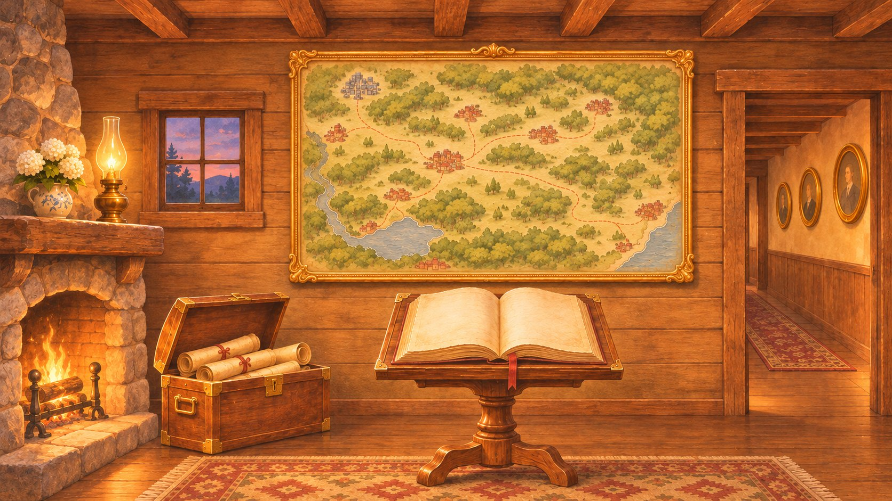

Back to the map~ sit a while ~

Back to the map~ sit a while ~
 Blackmere
Ashby
Redfern Grove
Greywater Ridge
Woodhollow
Briarwick
Hearthstead Ranch
Willow Grove
Hunter’s Cabin
The River
The Lake
Comanche
Rosehaven Bay
Gull’s Nest Inn
The Sea
Blackmere
Ashby
Redfern Grove
Greywater Ridge
Woodhollow
Briarwick
Hearthstead Ranch
Willow Grove
Hunter’s Cabin
The River
The Lake
Comanche
Rosehaven Bay
Gull’s Nest Inn
The Sea
lives hereworks hereboth~ touch a place to visit it ~
A few lines about Blackmere: what it is like, what you would see, hear and smell if you walked into it.
A few lines about Ashby: what it is like, what you would see, hear and smell if you walked into it.
A few lines about Redfern Grove: what it is like, what you would see, hear and smell if you walked into it.
A few lines about Greywater Ridge: what it is like, what you would see, hear and smell if you walked into it.
A few lines about Woodhollow: what it is like, what you would see, hear and smell if you walked into it.
A few lines about Briarwick: what it is like, what you would see, hear and smell if you walked into it.
A few lines about Hearthstead Ranch: what it is like, what you would see, hear and smell if you walked into it.
A few lines about Willow Grove: what it is like, what you would see, hear and smell if you walked into it.
A few lines about Hunter’s Cabin: what it is like, what you would see, hear and smell if you walked into it.
A few lines about The River: what it is like, what you would see, hear and smell if you walked into it.
A few lines about The Lake: what it is like, what you would see, hear and smell if you walked into it.
A few lines about Comanche: what it is like, what you would see, hear and smell if you walked into it.
A few lines about Rosehaven Bay: what it is like, what you would see, hear and smell if you walked into it.
A few lines about Gull’s Nest Inn: what it is like, what you would see, hear and smell if you walked into it.
A few lines about The Sea: what it is like, what you would see, hear and smell if you walked into it.
Some scrolls are open to anyone. Some are sealed, and open only for those who hold a key.
When and where is Edgewood? A few lines about its time, its seasons, and what lies beyond its borders.